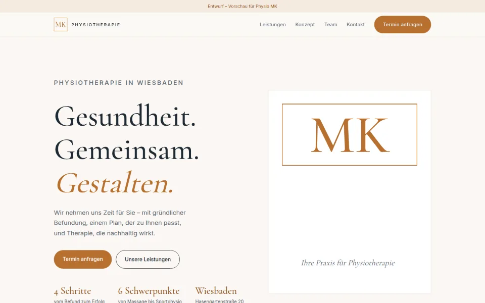
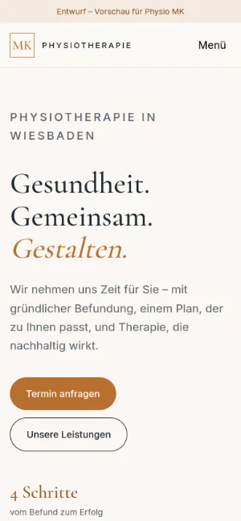

Case Study 05 / 30 · Gesundheit
Physio MK
Ruhige Praxis-Seite mit Leistungen, Vier-Schritte-Konzept, Team und Terminanfrage, ohne externe Anfragen.


Entwurf ohne Auftrag. Physio MK ist kein Kunde; Name und Marke gehören dem Betrieb. Das Formular hat kein Backend und öffnet nur das Mailprogramm.
Ausgangslage
Physio MK ist eine Praxis für Physiotherapie in der Hasengartenstraße 20 in Wiesbaden mit therapeutischer Massage, Sportphysio, Haltungskorrektur, Schmerzmanagement und Präventionskursen. Patienten wollen sehen, was die Praxis anbietet, wer dort arbeitet und wie sie einen Termin bekommen. Der Entwurf führt in fünf Abschnitten vom Angebot bis zur Anfrage.
Idee
Warmes Off-White, Kupfer als einzige Akzentfarbe und Cormorant Garamond für die Überschriften geben der Seite etwas Ruhiges und Persönliches, Inter hält den Fließtext klar. Das Logo ist ein kupferfarbener Rahmen mit „MK“, der im Hero als große Karte wiederkehrt. Die Abschnitte blenden beim Scrollen sanft ein, mehr Bewegung braucht eine Praxis nicht.
Was die Seite kann
- LeistungenSechs nummerierte Schwerpunkte von Massage bis Prävention mit je einem Satz.
- Vier SchritteBefunderhebung, Behandlungsplan, Behandlung und Reevaluation als Konzept-Abschnitt.
- TeamDrei Personen mit Rolle, Platzhalter-Initialen statt Fotos.
- TerminanfrageFormular mit Name, Telefon, E-Mail, Anliegen und Datenschutz-Checkbox; beim Absenden öffnet sich das Mailprogramm mit vorausgefülltem Text.
- KontaktTelefon-, E-Mail- und Adress-Link (OpenStreetMap), Anruf-Button in der Navigation, Hinweis, keine ausführlichen Gesundheitsdaten zu senden.
Dein Betrieb
So eine Seite für dich?
Schreib mir kurz, was du anbietest und was deine Website leisten soll. Du bekommst eine ehrliche Einschätzung, was sie kostet und was sie dir bringen kann.
Projekt anfragen